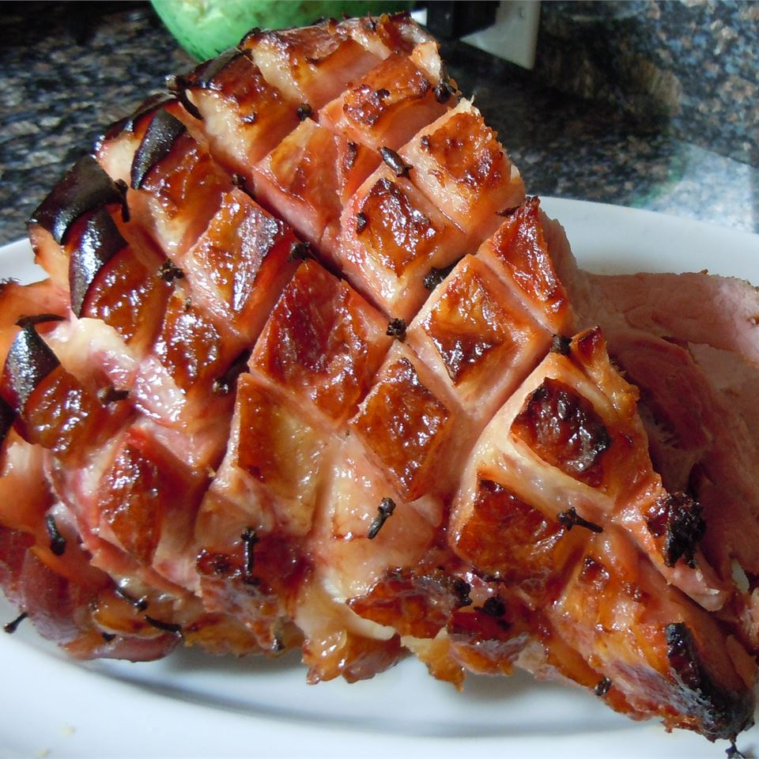

Honey Glazed Ham

Description
"Better than the famous honey baked ham at the store," user Kim Kebabjian DeWall says of this top-rated recipe. "I have some good tips! I used an ordinary Kirkland spiral ham from Costco ... about 8 pounds. I think buying a spiral ham is key because all the glaze can get into the slices."
Ingredients
- 1 (5 pound) ready-to-eat ham
- ¼ cup whole cloves
- ¼ cup dark corn syrup
- 2 cups honey
- ⅔ cup butter
Steps
- Preheat oven to 325 degrees F (165 degrees C).
- Score ham, and stud with the whole cloves. Place ham in foil lined pan.
- In the top half of a double boiler, heat the corn syrup, honey and butter. Keep glaze warm while baking ham.
- Brush glaze over ham, and bake for 1 hour and 15 minutes in the preheated oven. Baste ham every 10 to 15 minutes with the honey glaze. During the last 4 to 5 minutes of baking, turn on broiler to caramelize the glaze. Remove from oven, and let sit a few minutes before serving.